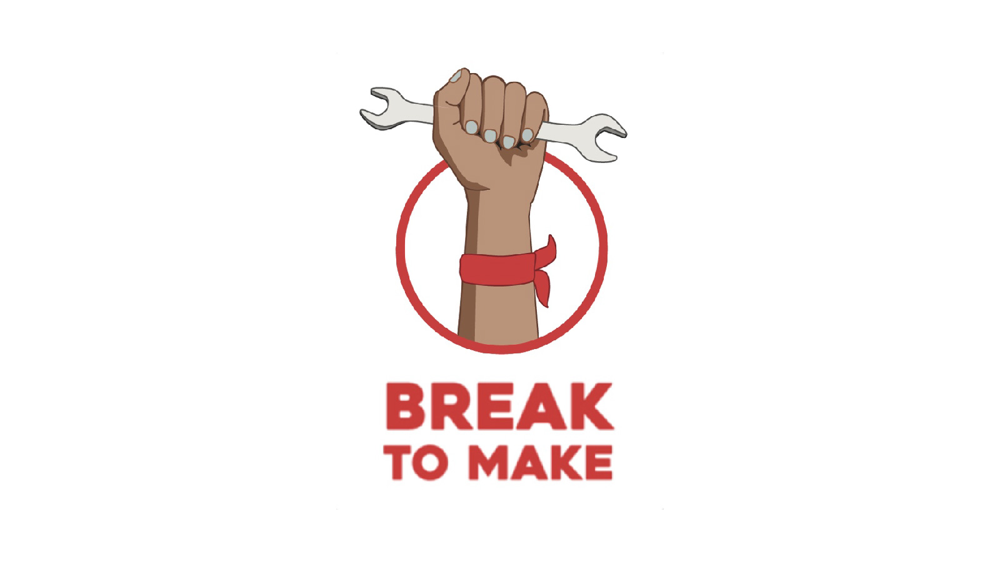
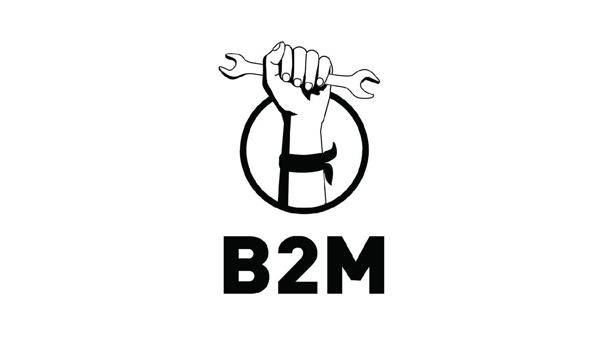
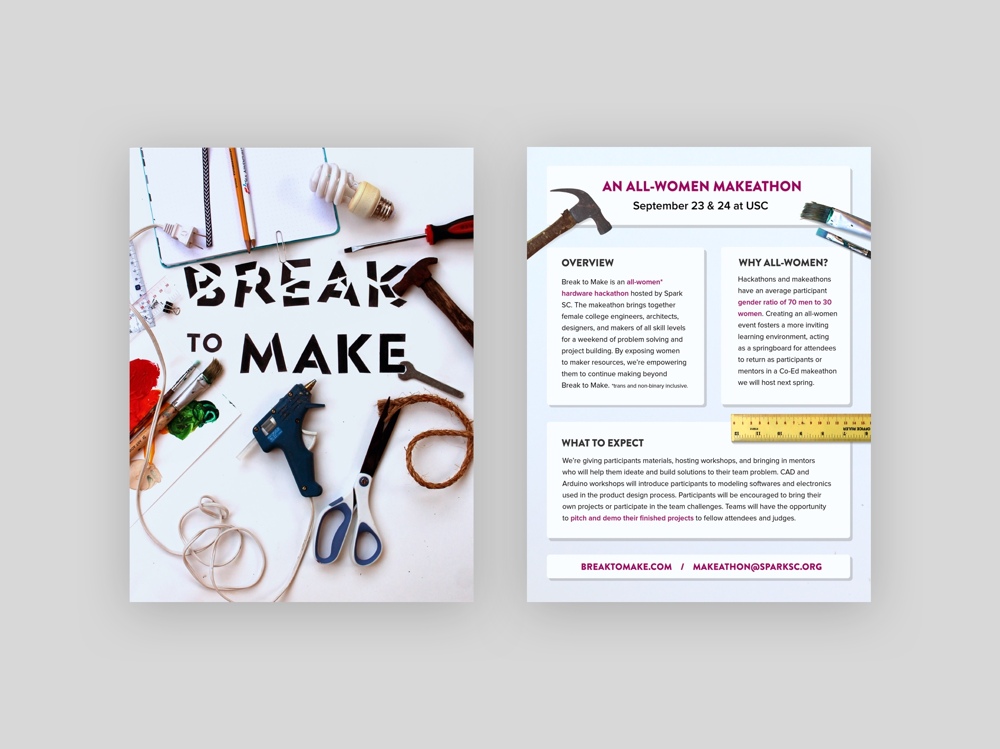
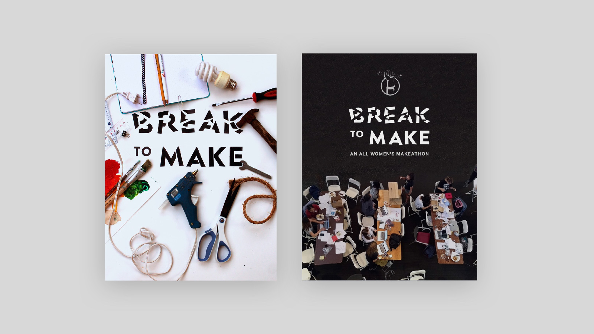

I’ve always loved to build. I went to an all-girls high school where I was part of the robotics team and taught in the school's makerspace. Around the same time, I became interested in the applications of engineering and human-centered design for social entrepreneurship. Coming to college, I was not able to find same supportive maker community I found at my high school, and I heard similar grievances from my peers.
In response, I started an all women’s makeathon called Break to Make (http://breaktomake.com/). Within USC’s male dominated entrepreneurship scene, I wanted to provide a supportive learning environment for women to explore hardware tech. Though I had never planned anything near the scale of a two-day hardware hackathon for a hundred women, my strong belief in its mission fueled my drive to mobilize a team and learn the ropes.
Over the summer, a few peers and I from Spark SC (a student organization fostering entrepreneurship on campus) turned my idea into a reality. I led efforts to raise over ten thousand dollars and outreach to mentors, speakers, and judges. My team and I developed a program where women from any major within USC could come to Break to Make and learn how to take an idea and turn it into a product in just two days with prototyping tools like 3D printing, laser cutting, and Arduino.

Graphics
One of my favorite projects I tackled while creating Break to Make was creating & establishing the Break to Make brand in all internal & external communications. Break to Make's brand was focused on conveying empowerment & inclusion.
Design considerations
Here are a few of the questions I considered while creating a brand for Break to Make, paritcularily around language and color:
Women or females? (Personal preference is definitely women. I haven't heard men who are engineers referred to as "male engineers" the same way I've heard folks reference "female engineers" — the explicit gender label feels a bit objectifying)
All women's? All-women? All womens?(definitely not all womens, but between the other two, pick one and stay consistent.)
How do you create a brand to both appeal to women without playing into any stereotypes about women? (don't use pink. prizes can be geared towards women, like hair ties, but seriously, don't use pink.)
Subsequently - how do you convey that an event is all women's without using pink or gender symbols?
Moodboard
With those considerations in mind, we created this hero image to capture the overal "mood" we wanted to convey in our brand. Spark SC's branding is typically rooted in cute Illustrator vector graphics, but I wanted Break to Make to feel tangible and bold. To accompany the name of the event, we created a tagline "Break the mold to make the future."

Logo Ideation
In creating the logo for Break to Make, I sketched out a few ideas with the following in mind:
A way to allude to an all women's event without explicitly using feminine colors or gender symbols. (The final logo alludes slightly to the female gender symbol with the base circle, the extended arm and horizontal wrench. The detail of nails and the hairtie on the wrist also act as hints)
Some maker related imagery that didn't feel clichéd or hackneyed like a gear or a lightbulb. (Well... I did use a wrench but the context doesn't feel derivative.)
The logo must be scalable, must work well in greyscale or black and white. (Scaling could be better, and check out the B&W logo I included below with the Break to Make "B2M" shorthand.)
With those considerations in mind, I played around a bit with the logotype and gears, but quickly jumped to the image of a hand grasping a tool. Since I was struggling with getting hand proportions right on Illustrator, I took a picture of my own hand grasping a wrench to use as a point of reference. The picture made it much simpler to abstract a stronger logo from than starting from scratch. The final logos are included below:


Website
I helped build and maintain the website, used to reach interested sponsors & potential participants. Find it here.
Information Deck
Used for outreach to sponsors. The full 2017 deck can be found here.

Marketing assets
Used to reach potential participants over Facebook & flyering around campus.

The Event
For this first year of the makeathon, a dozen teams of four came together at the Annenberg School for Communication and Journalism and the Department of Aerospace and Mechanical Engineering lab in Biegler Hall to design a solution to a challenge in one of four categories: food, water and shelter, communications, education, and open design. Many teams came with little experience in making, and by the end of the weekend had learned how to 3D print their first project or use an IoT board.
Workshops
The first day included workshops on ideation, the product design process, and prototyping. Partipants learned how to create a product with sustainable design and an end user in mind, and with the help of our mentors, every team had an initial prototype by the end of the first day

Projects
Project highlights were IoT smart tables, 3D printed disaster relief
bands, smart deadbolts, sustainable living spaces rendered in
Unity, and more. Prizes included IoT boards and self-balancing
robots.

Judges & Winners
Once teams finished their projects on the second day, they were evaluated by a panel of judges. This past year, we were joined by the incredible women featured below: Valerie Frank (left), Product Manager at Inventables; Kate McAndrew (center), Senior Associate at Bolt; and Tracy van Houten (right), the Mars Rover Test Program Lead at NASA JPL.


Wrapping up B2M 2017
Organizing Team
This event would not have been possible without my team's hustle. From left to right below, huge thanks to Raghav Maheshwari, Priscilla Pan, LySandra Vuong, (that's me there), Benjamin Stanfield, Irfan Faizullabhoy (not pictured) and Liam Maddox (not pictured).

Press Release
We created a summary packet after the event to follow up with sponsors. If you're curious, check out the full press release here.

Break to Make 2018
After the event happened in September 2017, we had dozens of requests from participants and sponsors to make it happen again. This semester, I want to understand how to scale, strengthen, and sustain our initial impact — the small but important boost of confidence we had instilled in our first participants. I’m leading a team of six talented women and men who are just as passionate about our mission, and I cannot wait to leverage what we learned from our imperfect first iteration to make this next year’s a greater success.
Updating assets
This spring semester, I'm excited to overhaul our 2017 assets. Below are the cover pages for the 2017 (left) and 2018 (right) sponsorship decks for comparison — a huge advantage of going into this year with a first makeathon under my belt was the sheer amount of imagery we'd captured that I could integrate into our brand moving forward. I was able to replace the bulk of the Illustrator assets with dynamic pictures of actual makers. The full 2017 deck can be found here, and the 2018 deck here.

Takeaways
Always stay focused on the mission & the team
The mission, the participants, and my team have all inspired me to do better in the past year. When I was feeling uninspired to create new graphics or drained from fruitless efforts in contacting companies, focusing on the mission kept me motivated.
Everyone can shape their community
Most importantly, my greatest motivation in my classes and projects has been to realize that as an individual I have so much agency to shape my community. All it takes is a “we can make it happen” attitude to start.
Press

Community Post for Sparkfun
Sparkfun
by Mimi Tran Zambetti
My blog post as a Community Partner for Sparkfun on fostering diversity and inclusivity in the maker community, one makeathon at a time.

Spark SC hosts first all-woman makeathon
The Daily Trojan
by Erica Hur
Spark SC and the Annenberg Innovation Lab collaborated to host the event, “Break to Make,” in an effort to cultivate the talents of women in engineering at USC.

“Break to Make”
USC Viterbi
by Ashleen Knutsen
The winners of the University’s first all-woman makeathon.